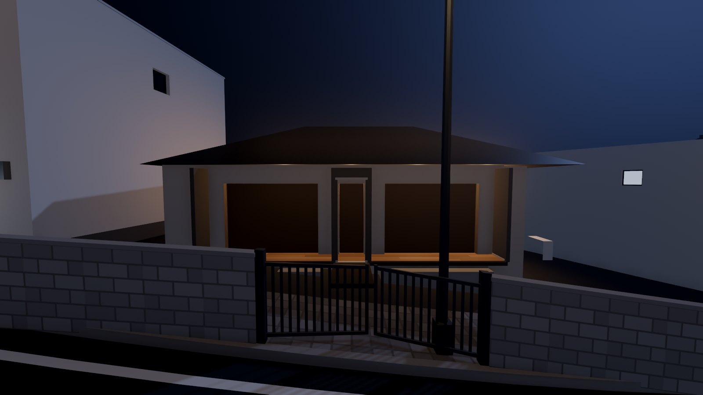
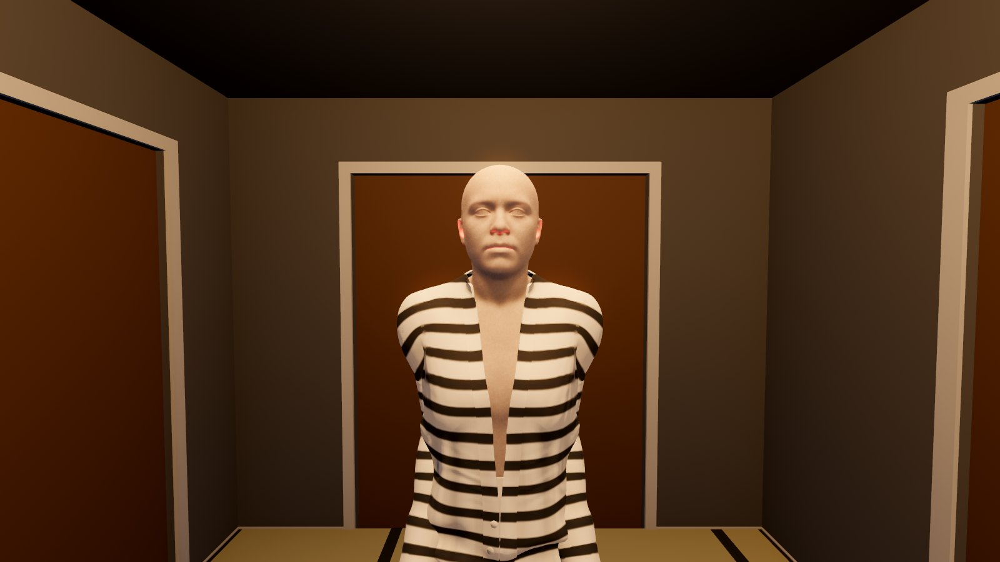
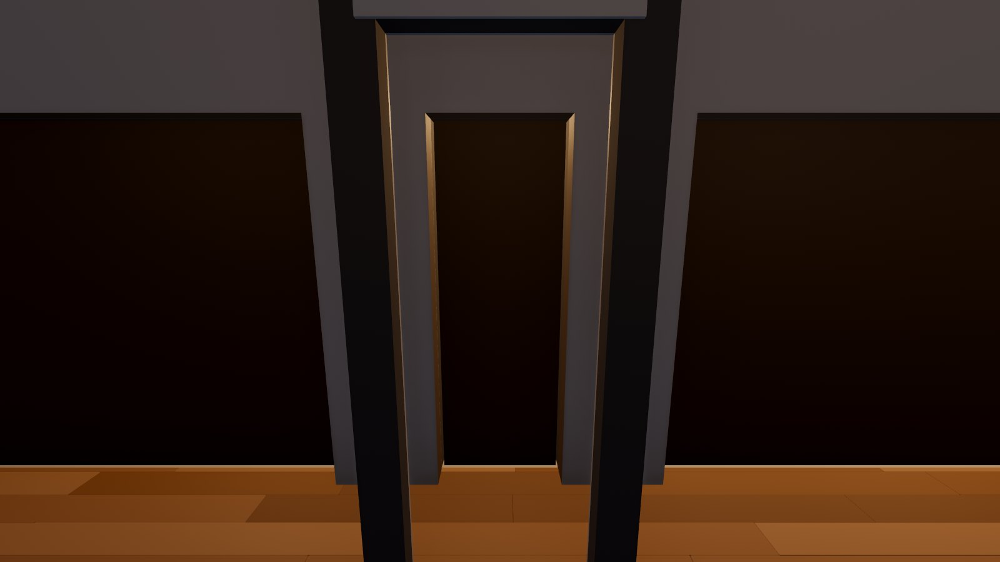
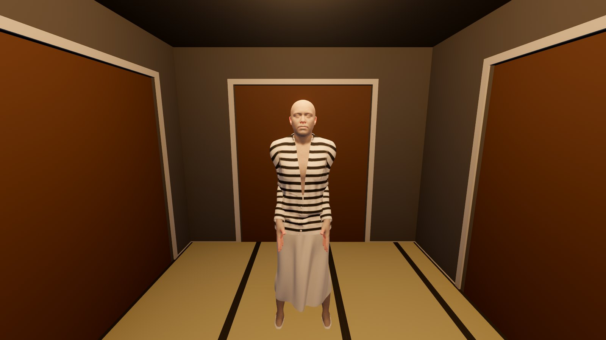

Your first game, by hand
A street at night. A small house up a garden path. Slide the front door open, go down the passage, and open the guest room. The lights die. When the flashlight comes on, she's standing there. Each part comes from one of the studio's editors: the house from the scene builder, the street from the street builder, her from the Character Studio. They're put together in Godot with a handful of short scripts.
1What you'll make


Every picture here is that game, drawn by Godot. python tools/godot/first_game.py --keep ~/Games/FirstGame_done builds
it exactly as these steps do, if you'd like to open the finished one beside yours (a folder of its own: it's emptied each time).
2Before you start
- Godot 4.7 (the standard build).
- The studio's tools running:
./studioin the studio's folder lists them, or the dashboard (python dashboard.py). The scene builder and the street builder are the desk's pages (its server:python tools/director/serve.py, then http://127.0.0.1:8780/builder.html and /street.html). The Character Studio has its own (python tools/character/serve.py, http://127.0.0.1:8793). - Godot by hand explains what each step here does underneath. Read it later, or now.
3The house: an interior
- Open the scene builder and pick set: bungalow in its game list (the Bungalow: a garden path, a front engawa, a passage, a guest room, a living room, a kitchen...). Your own set works the same.
- In the 3D view's bar, untick outside. The house goes inside the street's own shell, which has its outer walls and roof already.
- Press Export for Godot in the toolbar. It writes
Exports/interiors/bungalow/:bungalow.glband a README.
4The street
- Open the street builder and pick hill_motel. It has the Bungalow already: the walk-in
building
bungalow1, made from the palette's Bungalow (a set inside a building). On a street of your own, put one in from the palette the same way. - Press Export for Godot. It writes
Exports/streets/hill_motel/. Its README lists the walk-in buildings' markers. The Bungalow's isinside_bungalow1_1_1.
5Her: a character
- Open the Character Studio and your character (or make one: the Body, Face, Clothes and Hair tabs).
- Press Export for Godot in its header. It writes
Exports/characters/<her name>/, with her face shapes baked in.

6The project
Make the project. It comes with the Look plugin, HumanShaders and the starter scripts:
python tools/godot_byhand.py new ~/Games/FirstGame
Open it in Godot (Project Manager, Import, its project.godot). Then bring the
three exports in: drag Exports/interiors/bungalow, Exports/streets/hill_motel and
Exports/characters/<her name> from your file manager into the FileSystem dock, each into its own folder under
res://exports/. Or, from the studio's folder:
python tools/godot_byhand.py exports ~/Games/FirstGame --link
7The scene, part by part
Scene → New Scene, 3D Scene. Rename the root Main and save it as
main.tscn. Then Project → Project Settings → Application → Run → Main Scene: main.tscn.
When you're done, the Scene dock reads:
The look and the moon
Add Child Node (Ctrl+A), type HSLookEnvironment, add it and rename it Look.
In the Inspector, untick Editor Only so it stays in the game. Add a DirectionalLight3D,
call it Moon, tilt it down about 30°, and give it a pale blue colour, Energy 0.18 and Shadow on.
The street and the house
Drag exports/streets/hill_motel/hill_motel.glb from the FileSystem onto Main and rename it
Street. Drag exports/interiors/bungalow/bungalow.glb onto Main and rename it Bungalow.
Drag starter/interior.gd onto the Bungalow to give it the script. In the Inspector, set Street to
Street and Marker to inside_bungalow1_1_1, and the house jumps into its shell on the street.
When the game runs, interior.gd also makes every door open and shut with E.

Her
Drag her .glb onto Main and rename her Mari (or her own name). Move her into the
guest room: through the front door, then the first sliding door on the left. Turn her to face that door. Give her two
children: Add Child Node → HSCharacterLook (the studio's skin, eyes and hair when the game runs),
and a plain Node called ArmsDown with starter/arms_down.gd (her arms by her sides).

The player
Drag starter/player.tscn onto Main. Stand it on the garden path, inside the gate, facing the
house. The player looks along its -Z: select Player/Eye and tick Preview at the
top of the 3D view to see through it.
8The scare
- Add an Area3D to
Main, call itScare, and give itstarter/scare_area.gd. - Give it a CollisionShape3D child with a new BoxShape3D, about
3.2 × 2.2 × 2.7 m. Move and turn it to fill the guest room. The room's size is in the Bungalow's
markers/trigger_kyakuma__volumemetadata (Editable Children shows it). - In its Inspector: Lights Of →
Bungalow(every lamp in the house goes out), Appear →Mari(hidden until then). - A sound: give it an AudioStreamPlayer3D child named
Sound. Drag a sting from the studio's sound shelf into the project (Content/Studio/SFX/stings/sting_short.ogg, CC0) and set it as its Stream.
scared signal for anything else, such as a door slamming shut behind the player.9Play it
Press F5.
| W A S D | walk up the path (the step onto it is taken in stride), Shift runs |
| mouse | look |
| E | slide the front door open, then the guest room's |
| F | the flashlight |
| Esc | let the mouse go |
Walk into the guest room. The lamps die and the sting plays. Press F.
10Where to go next
- More scares: copy
Scareinto another room. Itsscaredsignal can start anything, such as an AnimationPlayer. - A dying bulb, rain at the window, a wet floor: the Look plugin's nodes and presets, in
its guide. Try
presets/dying_bulb.tscnin the passage. - Her face: an AnimationPlayer keying her blend shapes (
eyesClosed_L,jawDrop...), or the face clips the studio's Face page makes. - More rooms: another set exported, another walk-in building on the street.
- Quests, conversations and endings: that's what the Director is for. Its guide.